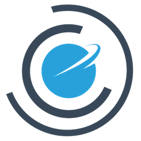

CloudMicrophysics.jl
The CloudMicrophysics.jl is a library of bulk cloud microphysics and aerosol schemes:
librarymeans thatCloudMicrophysics.jlprovides a variety of parameterizations that can be used to define tendencies in different numerical models.cloud microphysics and aerosol schemesmean that the parameterizations represent small-scale processes leading to the formation of clouds on aerosol particles and the formation of precipitation.bulk schemesmean that the schemes parameterize behavior of populations of particles (aerosol, cloud and precipitation), instead of tracking the evolution of individual cloud droplets or ice crystals. Bulk schemes typically consider different somewhat arbitrary water categories such as cloud water, cloud ice, rain and snow. They predict total mass and (optionally) number concentration of particles in each category.
Features
CloudMicrophysics.jl is designed to allow data driven parameter calibrations. All free parameters are passed as inputs to the functions and can be easily overwritten by the user. The package is tested on Unix, OSX and Windows. The package can be used on both CPUs and GPUs.
Available parameterizations:
- 0-moment scheme that instantly removes the precipitable cloud condensate,
- 1-moment scheme for warm rain and mixed-phase clouds (cloud water and ice, ran and snow (aggregate)),
- 2-moment scheme for warm rain clouds (cloud water and rain),
- collection of different 2-moment autoconversion and accretion functions,
- experimental non-equilibrium cloud formation scheme,
- a collection of logistic functions for smooth transitions at thresholds,
- aerosol activation scheme
- ice nucleation scheme via water vapor deposition on dust aerosol, heterogeneous and homogeneous freezing of droplets.
Documentation outline
Parameterizationsprovide notes on the derivations and assumptions behind each of the implemented schemes. The scripts that generate different plots in the documentation are stored indocs/src/plotsfolder, and can serve as usage examples of the schemes.How to guidesprovide simple examples on how to get started using the package.Modelsdiscuss two 0-dimensional models that are build using the package and are focused on testing different ice nucleation schemes.APIprovides package interface documentation.Developer's Guideoffers some hints for beginner contributors.Glossaryexplains some basic terminology.Referencesprovide links to the publications on which we based our implementations.
Contributing and license
CloudMicrophysics.jl is developed by the Climate Modeling Alliance and is released under the Apache License Version 2.0. Please check contributing section if you would like to contribute to the project and are looking for ideas. Please open an issue or reach out to us if you have any questions or comments.
